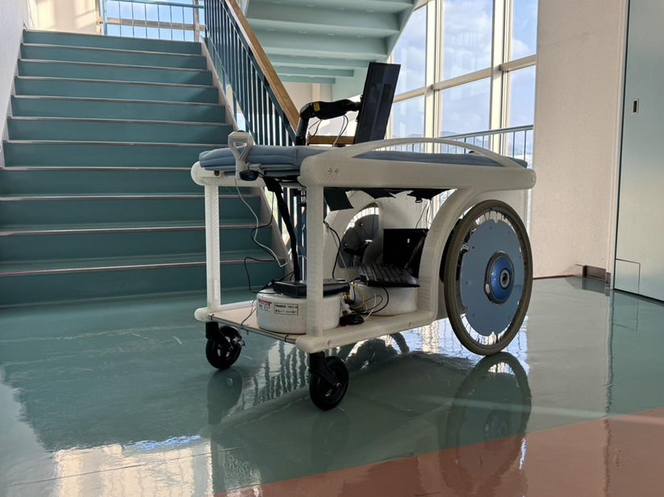
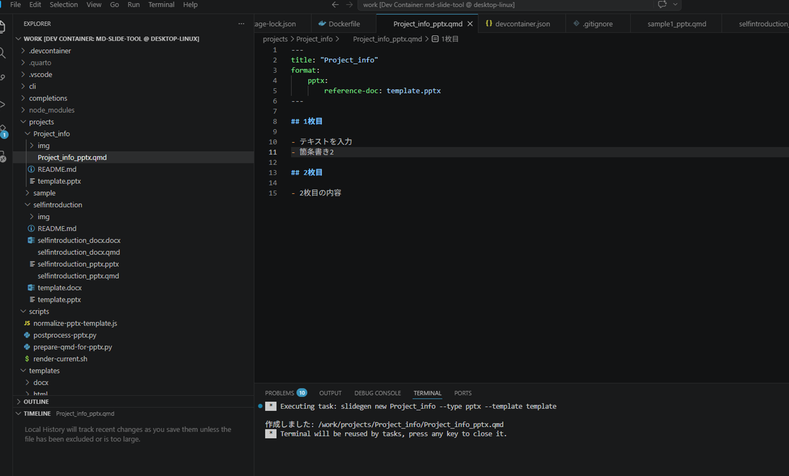
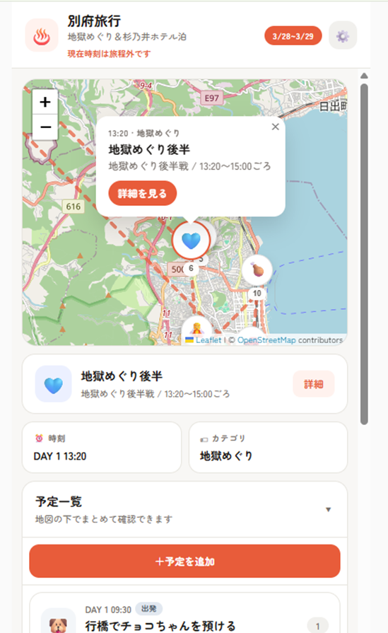
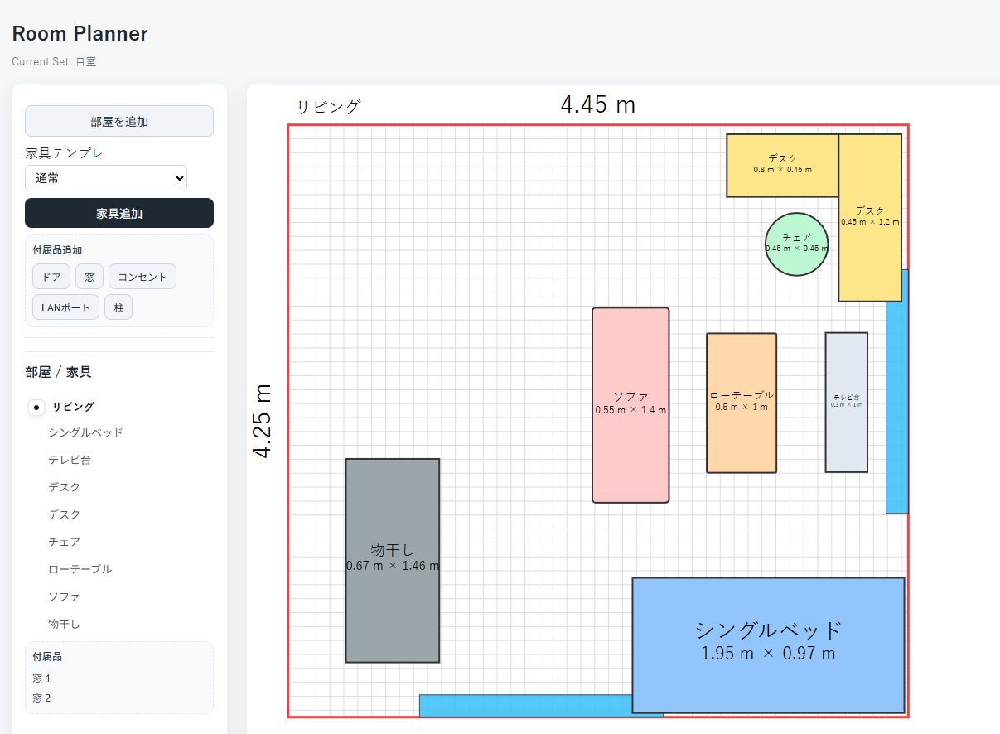
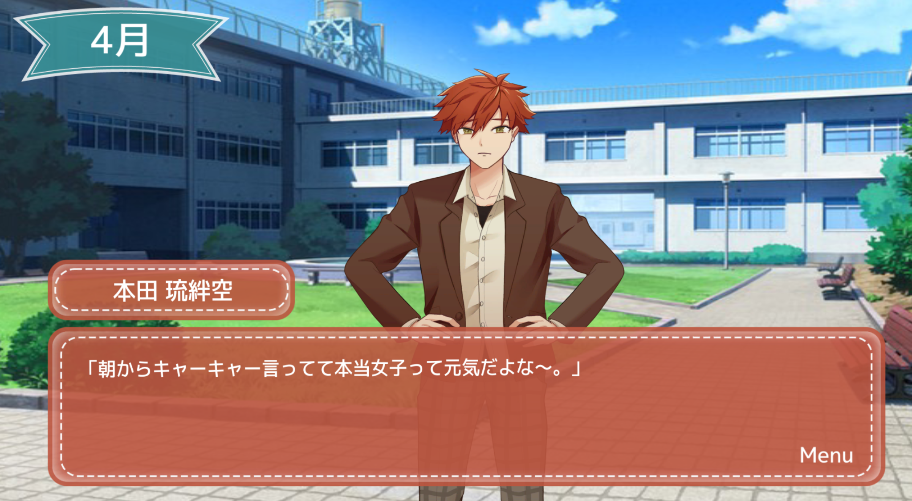
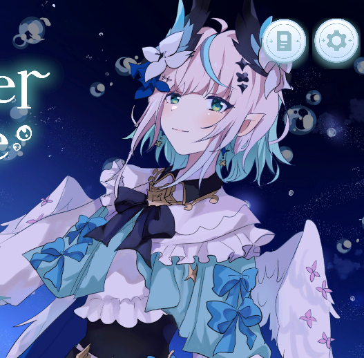

課題解決が得意
ユーザー目線で考えて ぴったりの解決を見つけます
システム開発/ゲーム開発
ユーザーにとって使いやすいシステムや、見ていて楽しい表現を目指して、企画から開発・改善まで一貫して取り組んでいます。
ABOUT
九州産業大学大学院 情報科学研究科を修了後、 現在は有限会社bondにて、アバターによる情報伝達システムの 開発・営業を担当しています。
修士研究では、カメラ映像と音声通知による 電動ストレッチャー支援システムを開発し、研究科長賞を受賞しました。
「情報をどう伝えるか」をテーマに、 研究・実務・個人開発のそれぞれで試行錯誤を重ねています。
研究科長賞 受賞
新規事業開発担当エンジニア
Strengths
ユーザー目線で考えて ぴったりの解決を見つけます
むずかしい内容も やさしく伝える工夫をします
いろんな技術を組み合わせて 形にするのが得意です
楽しみながら考えて より良いものを作ります
PROJECTS
カメラ映像と音声通知によって、視界が制限された利用者の移動を支援するシステムを開発しました。
詳しく見る →





SKILLS